Complete visual audit and battle test results. 102 findings resolved across critical, high, medium, and low priority tiers.
February 24, 2026 — Deployed to floreser.life
App.tsx that was double-layering with page textures, causing illegibility#f5f3ef to #faf8f5 for better readabilitybg-papercut-leaf-sage replaced with bg-forest/10opacity-70 to opacity-80React.lazy for 35 route componentsaria-live on loading states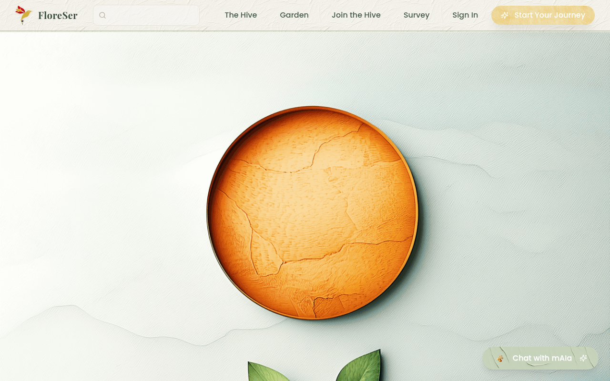
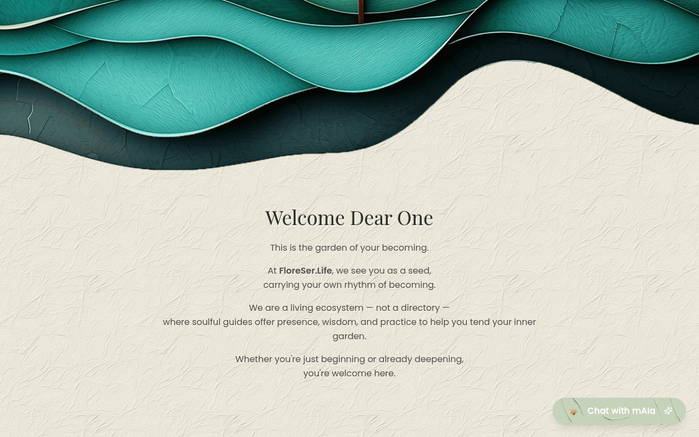
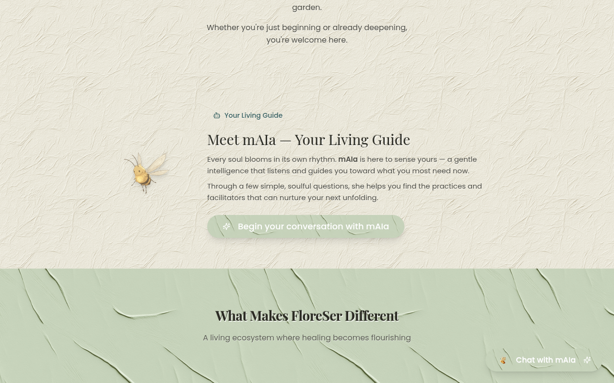
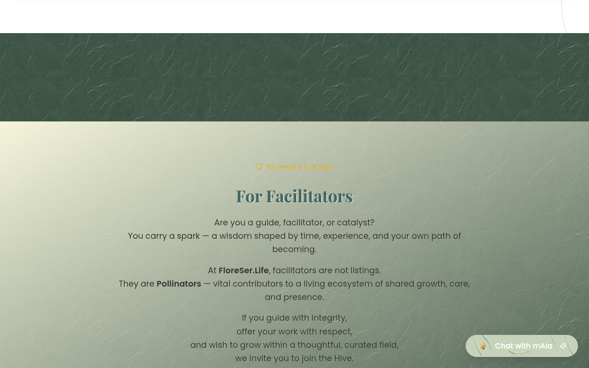
max-w-6xl with consistent py-8 lg:py-12 paddingborder-sage/20text-red-600 to text-destructive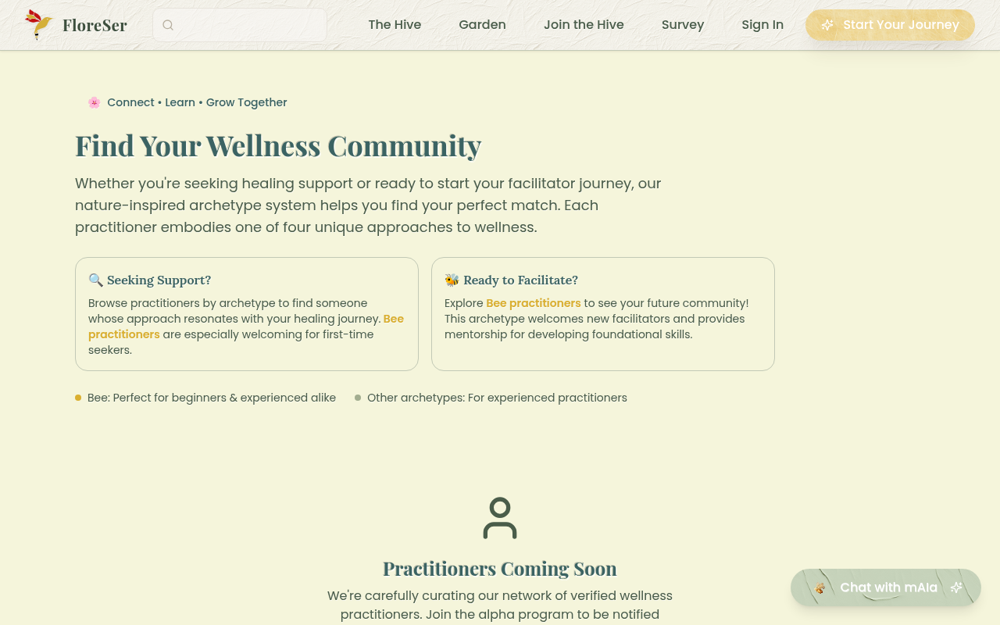
bg-white/90 rounded-xl backdrop to practitioner card text areas for legibilityrounded-lg bg-white border-sage/30#faf8f5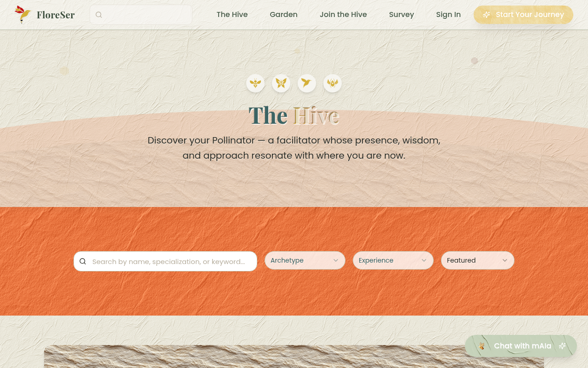
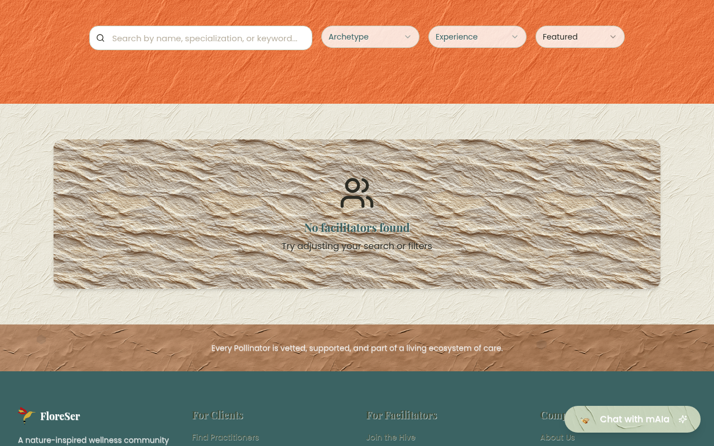
@/components/icons/TudorRose.tsxbg-white/50 backdrop-blur-[1px] to "What We Stand For" value cards for text legibility over texturestext-forest/75 to text-forest/80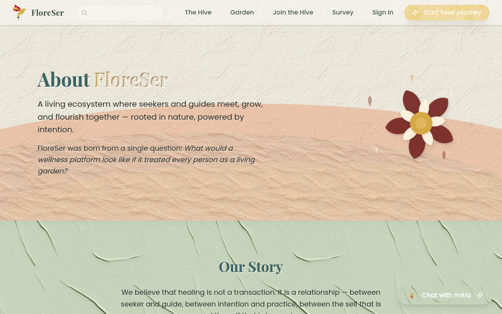
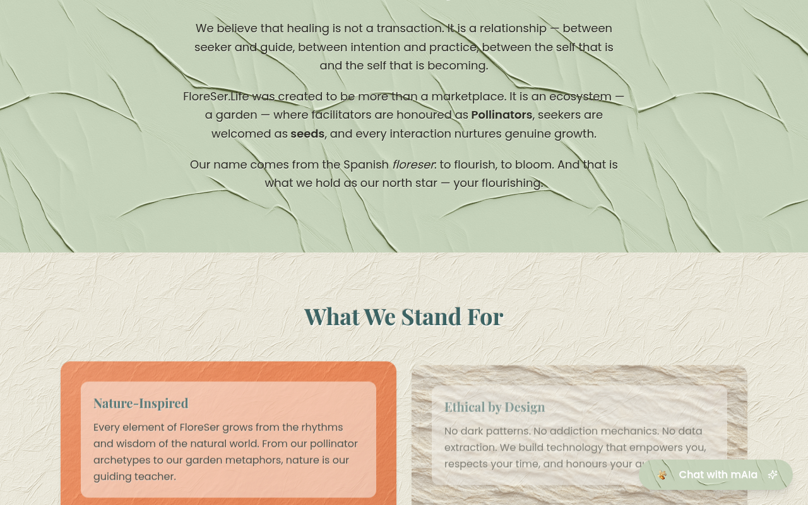
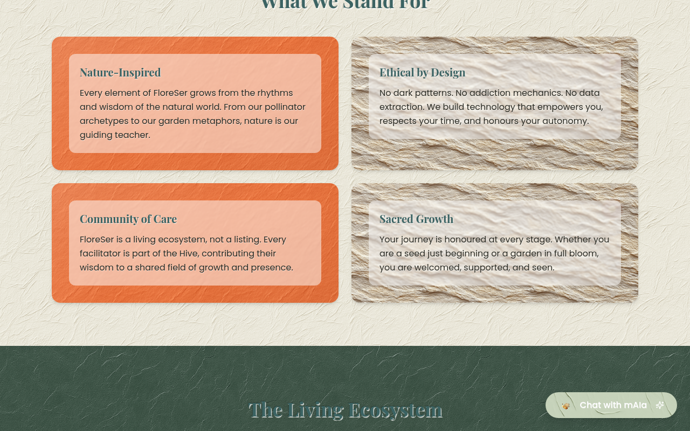
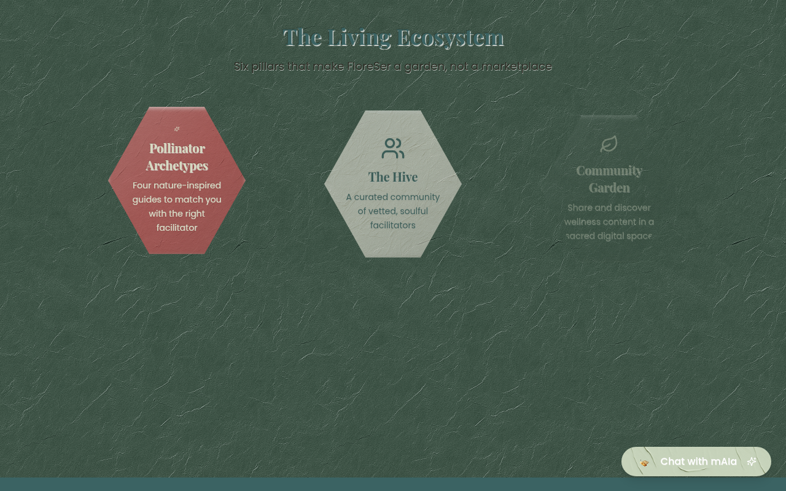
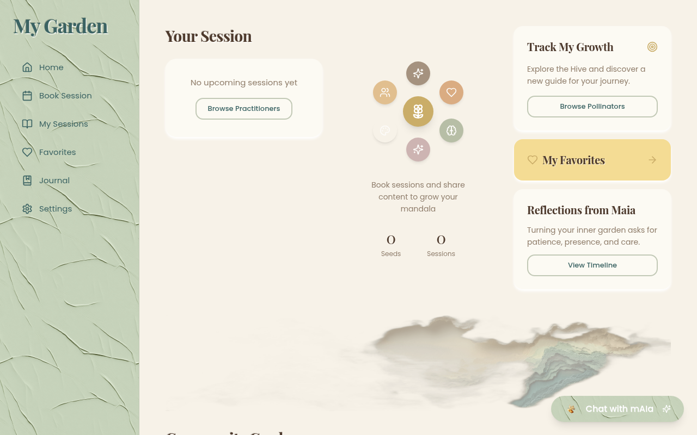
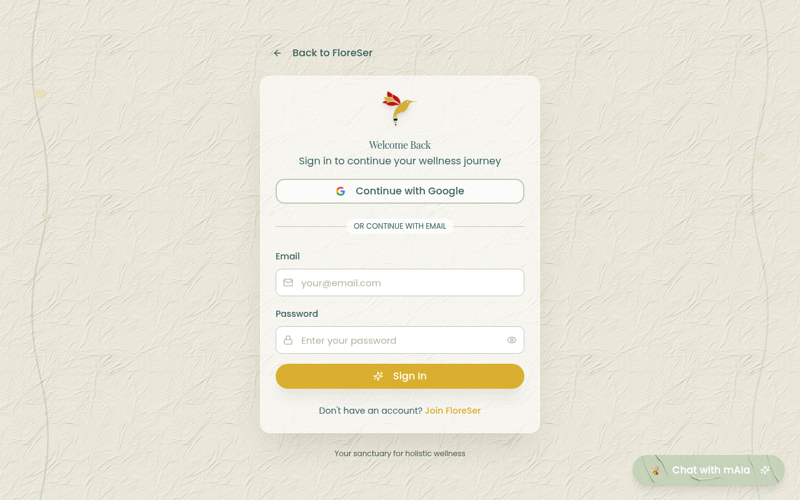
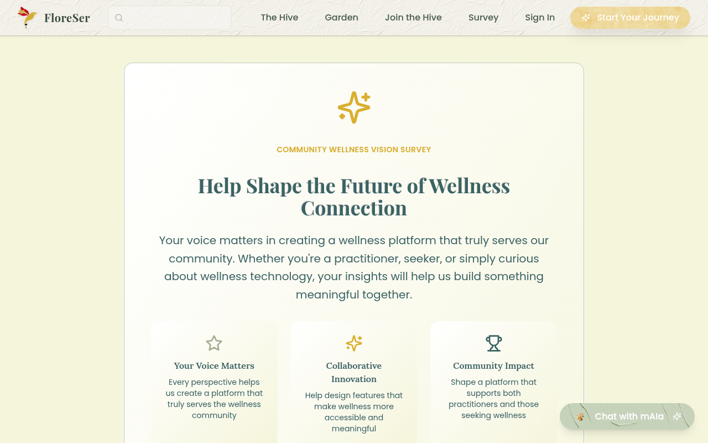
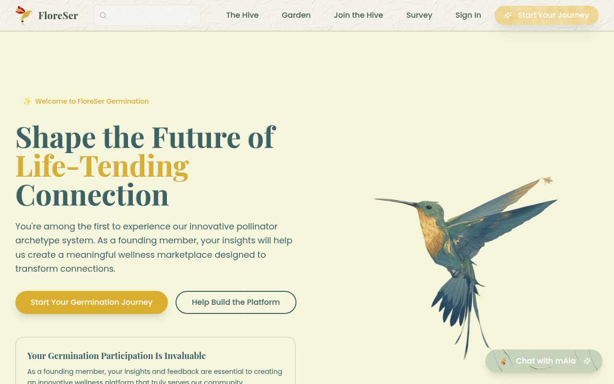
Three pages had custom navigation bars and off-brand color schemes. They now use the shared Header/Footer and brand tokens.
| Page | Before | After |
|---|---|---|
/payments |
Custom nav, emerald gradient, off-brand buttons | Shared Header/Footer, bg-cream, forest/sage/gold tokens |
/analytics |
Custom nav, amber gradient, generic gray colors | Shared Header/Footer, bg-cream, brand typography |
/favorites |
Custom nav, teal gradient, inconsistent styling | Shared Header/Footer, bg-cream, font-heading headings |
| Metric | Before | After | Improvement |
|---|---|---|---|
| Main JS Bundle | 501 KB | 290 KB | -42% |
| Image Assets (dist) | 94 MB | 21 MB | -78% |
| Route Loading | Monolithic bundle | React.lazy (35 routes) | Code-split |
| Vendor Chunks | 1 monolith | 4 chunks (react, motion, ui, query) | Cacheable |
| npm Vulnerabilities | 36 | 20 | -44% |
vercel.json: X-Frame-Options DENY, X-Content-Type-Options nosniff, strict Referrer-Policy/assets/*)server/replitAuth.ts and archived landing page/design-system-test) behind import.meta.env.DEVApp.tsx with id="main-content" targetSheetTitle for mobile navigation accessibility (required by Radix dialog)aria-label attributes on search inputs and password toggle buttonshtmlFor/id on admin dashboard form labels<span aria-hidden="true">width and height attributes on logo images to prevent CLSloading="lazy" on below-fold images and fetchPriority="high" on hero imagesusePageMeta hook for centralized document title, meta description, and canonical URL managementrobots.txt and sitemap.xmlAdded 15 database indexes across 10 tables in shared/schema.ts to improve query performance on frequently-accessed columns.
| Table | Indexed Columns |
|---|---|
| users | googleId, stripeCustomerId |
| user_roles | userId |
| practitioners | userId |
| clients | userId |
| sessions_booking | clientId, practitionerId |
| reviews | practitionerId, sessionId |
| seeds_transactions | userId |
| garden_content | authorId |
| garden_interactions | userId, contentId |
| favorite_practitioners | userId, practitionerId |
| Page | Route | Status | Notes |
|---|---|---|---|
| Landing | / |
Pass | Hero, mAIa, hexagons, footer -- all legible, no double texture |
| Practitioners | /practitioners |
Pass | Consistent header, bg-cream, unified card layout |
| The Hive | /hive |
Pass | Unified search/filters, readable texture backgrounds |
| About | /about |
Fixed | Value cards got frosted backdrop for text legibility |
| Garden | /garden |
Pass | Sage sidebar, cream main area, white cards |
| Sign In | /auth/signin |
Pass | White card, good contrast, accessible form |
| Survey | /survey |
Pass | Clean card layout, gold accent, brand typography |
| Alpha | /alpha |
Pass | Brand gradient heading, hummingbird art |